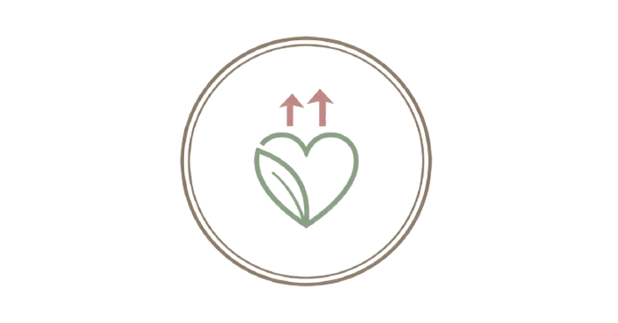
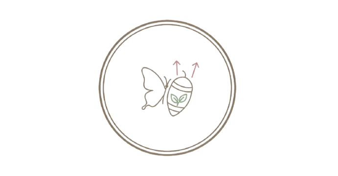

CORPO INCRÍVEL
APÓS OS 40
O guia essencial para a mulher madura que transforma com saúde e força


DESAFIO SUPERADO
Você não está sozinha nessa jornada. Se o cansaço, o inchaço e a gordura abdominal pós-40 parecem um desafio intransponível, o Plano 4.0 é a sua vitória. Supere as "regras do jogo metabólico" com um método que respeita seu corpo e celebra cada conquista. Sua transformação começa agora!

SAÚDE E VITALIDADE
Desperte a vitalidade que está adormecida em você. Com o Plano 4.0, você vai desinchar a partir dos primeiros dias, ativar seu metabolismo e nutrir seu corpo com alimentos que curam. Sinta a diferença em sua energia, disposição e no fim da gordura teimosa, para uma vida plena após os 40.

TRANSFORME-SE
Chega de lutar contra o seu corpo! Descubra a ciência hormonal que desliga o modo de armazenamento de gordura. O Plano 4.0 não é uma dieta, é um método inteligente de 21 dias para você recuperar sua energia, desinflamar e conquistar a leveza que merece.

Cristina Viana
Meu depoimentos. Depois do ebook descobri tantas coisas, e eu achava que sabia de tudo, mas fazer o meu metabolismo trabalhar a meu favor fez toda diferença. Neste conteúdo encontrei tantas coisas que nem imagina que fariam tanta diferença. Recomendo muito. Fiquei linda maravilhosa poderosa e me sinto com 20 anos de novo kko
Raimunda Silva
Este e-book foi um alívio! Ele reconhece as nossas lutas diárias – o estresse, a falta de tempo e a mudança hormonal – e oferece soluções que funcionam para uma mulher madura. Não é só sobre perder peso; é sobre recuperar a vitalidade e a confiança. Senti que fui vista. As dicas são práticas e realmente ajudaram a quebrar a barreira da dificuldade de emagrecer

Viviane Martins
A melhor fase da vida é quando a gente para de lutar contra nosso corpo e começa entende-lo. Este e-book foi um divisor de águas para eu compreender que o meu processo havia mudado.